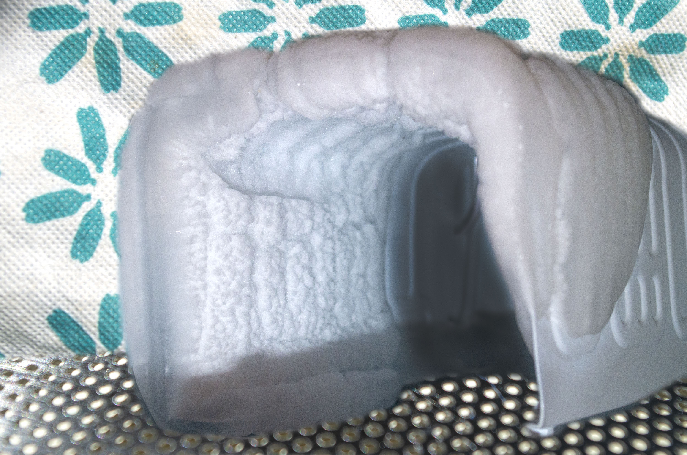

In North Kitchen, there is an interesting phenomenon in which there is a small area of extreme cold known as Fridge. While few people choose to live there, many people explore it in search of rare game and other resources. The landscape is mountainous and full of ice caves such as this one. Exploration is perilous, but the rewards can be priceless.